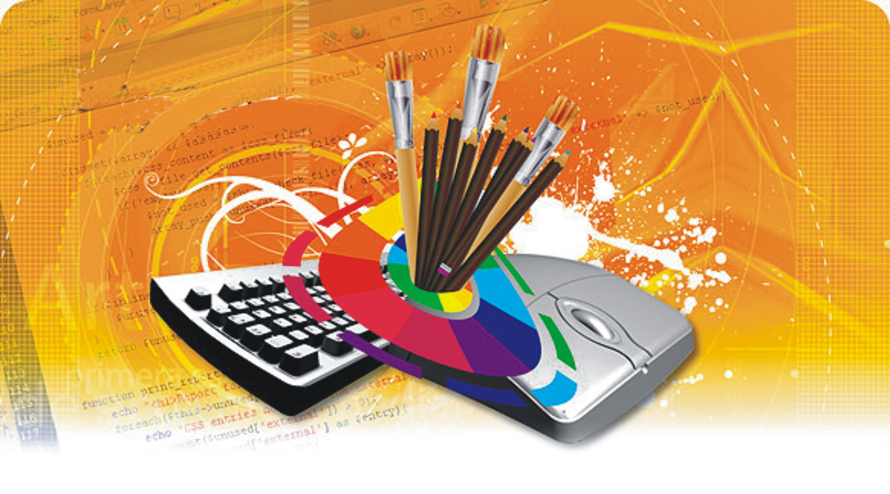

Skills
●Programming
●Coding
●Graphic Design
●Photography
●Video Editor
●Music Production
Services
●Digital Printing
●Photo and Video Editing
●Graphic Design Service
●Music Editing


I am currently taking Bachelor of Science in Information Technology majoring in Multimedia Technology at University of Antique. I am very interested in technology and this means that I range really from anything Electronic, to all IT related things like programming (Python is my best ) network security or for example database management. My programming skills include Python, Java and C++, but I have a specific interest in web-design and multimedia. Throughout my academic career, I have the opportunity to working on many personal projects like building a web application for local business or designing secure network that serve small organization. I am always excited to learn new technologies and be in line with the future of IT. IT is the field that I am most excited about and hope to be working with exciting, innovative projects in it.
→ Bachelor's Science Information Technology
→ Major in Multimedia Technology(MMT)
I passed my NC III in Visual Graphic Design through a combination of thorough preparation and continuous practice. I started by understanding the core competencies and completing all necessary modules. I honed my skills using software like Adobe Photoshop and Illustrator, creating a diverse portfolio. Seeking feedback from instructors and peers helped refine my work. Mock assessments familiarized me with the exam format, and staying updated with design trends ensured my work was relevant. My dedication and passion for graphic design were key to my success.
My journey as an IT student has been both challenging and rewarding, shaping me into a well-rounded and skilled individual ready to tackle the dynamic world of technology. From the outset, I was drawn to the endless possibilities that the field of Information Technology offers. My coursework has provided me with a strong foundation in various programming languages, network security, and database management, allowing me to develop a comprehensive understanding of the IT landscape.
Throughout my studies, I have had the opportunity to work on several real-world projects that have significantly enhanced my technical skills and problem-solving abilities. For instance, I developed a web application for a local business, which involved designing the user interface, coding the backend, and ensuring the overall functionality of the application. Additionally, I created a secure network for a small organization, which required me to apply my knowledge of network security protocols and best practices.
Overall, my experience as an IT student has been transformative, equipping me with the skills and knowledge necessary to excel in the field of technology. I am excited about the future and look forward to contributing to innovative projects and making a meaningful impact in the IT industry.